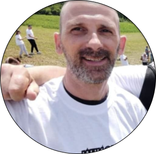
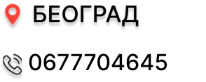
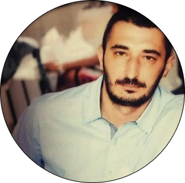
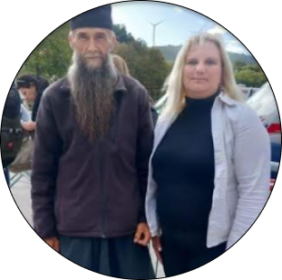
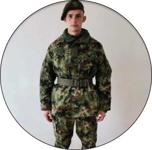
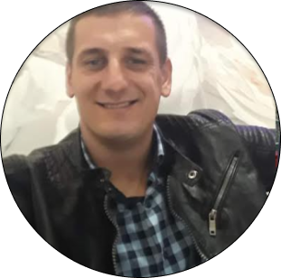
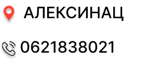

ДРАГОЉУБ КРСТИЋ

Рођен 1979. и одрастао у Београду.Отац двоје деце. Говори руски,словачки и енглески.
Од 17. године бави се грађанским активизмом и хуманитарним радом.
Учествовао је у десетинама хуманитарних акција. Учествовао је у десетинама протеста. Организовао је преко 10 протеста на територији Београда за побољшање услова живота грађана Гроцке. Предлагач неколико закона везано за права деце и сузбијање породичног насиља над малолетницима.
Директни је учесник у рату 1998/1999. као припадник Граничних јединица војске Србије као дресер паса за специјалне намене.
Такмичар бициклистичког клуба Партизан.
Бави се планинарством и бициклизмом.
Оснивач УГ Наша Калуђерица од 2010. године које се бори против сваке власти која ради против интереса грађана и којој је корупција основ постојања.
Залаже се да се похапсе сви актери садашње власти, да се грађанима повећа стандард одговорнијим трошењем новца уместо садашње крађе.Да се странке саме финансирају уместо из буџета града. Да се посланицима смање плате и да се тај новац преусмери сиромашним породицама.

ИВАН ЂОРЂЕВИЋ
Иван Ђорђевић је рођен у Пожаревцу, а сада станује у Костолцу. Основно и средње образовање завршио је у Костолцу. Ради на површинском копу као багериста. Породичан је и амбициозан човек, борац за правду, поштен и посвећен својој породици.
У биографији Ивана Ђорђевића посебно се издваја његова активност као један од људи који је почео са прикупљањем потписа петиције за подизање споменика покојном Генералу Божидару Делићу на Калемегдану у Београду.
Такође, Иван је покретач многих хуманитарних акција на територији Костолца и Пожаревца, показујући тиме своју љубав према Србији и њеном народу.
Иван је покретач и петиције за подизање споменика суграђанину Предрагу Игњатовићу, који је страдао у НАТО бомбардовању 1999. године. Он се труди да сваки учесник у ратовима деведесетих година добије спомен-обележја. Искрени је борац за правду и спас мајке Србије.
Иван упућује позив својим суграђанима да се прикључе изабран је за представника Јачи од Система Костолац

МАРИЈА СЛАВКОВИЋ
Рођена у Смедеревској Паланци. Основну и средњу школу такође завршила у Смед. Паланци. Живим у Параћину - самохрана мајка детета од 13 година. Поседујем основни ниво енглеског језика. Тренутно радим као помоћни радник у хотелу.
Хуманиста борац за животиње. Укључила сам се овде због решавања проблема обичних људи и разговора са њима. Чврсто решена да се борим за боље сутра своје деце и свих нас.
Марија Славковић представница Народног Покрета Јачи од Система Параћин и овим путем вас позивам да се укључите и дате свој допринос

ЊЕГОШ АНДРИЋ
Рођен у Новом Пазару. Тренутно живи у Рашкој. Основну и средњу школу похађао у Рашкој - угоститељска школа, одсек: кувар. Тренутно радно место - електричар са радом на висини. Рођен 2002. године добровољно одслужио војни рок. Његош је борац за слободу, патриота и родољуб. На првом месту му је домовина и мајка Србија. Искрени борац за правду и верује да може доћи до промена са народном опцијом.
Овим путем позива грађане Рашке да му се прикључе у борби.
Његош је представник Народног Покрета Јачи од Система Рашка

СЛАВИША МАРКОВИЋ
Славиша Марковић долази из села Бастав, општина Осечина.
Пољопривредник је и возач са поруком : Боље је оставити све обавезе и укључити се у борбу - јер се боримо за будућност наше деце,
него кроз коју годину оставити посао и обавезе и отићи доктору болестан.
Здравље се не продаје.
Славиша Марковић представник Јачи од Система Осечина

ИГОР ЂОРЂЕВИЋ
